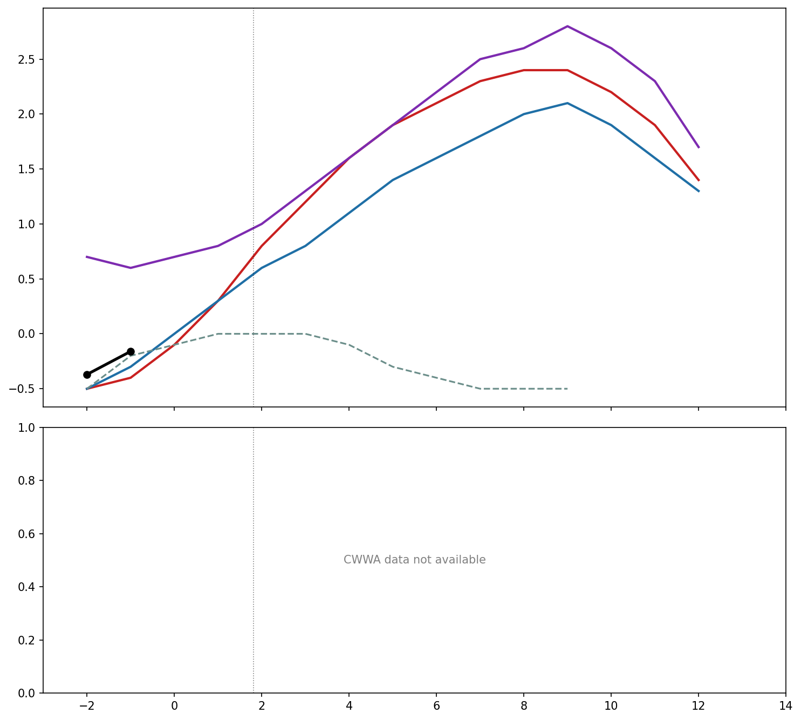

Internal use.
Target peak season: DJF 2026-27. CPC's longest-lead strength bin is NDJ 2026-27, used as the proxy for the DJF peak.
Peak Niño 3.4 (traditional ONI), DJF 2026-27 / NDJ 2026-27. Headline numbers below are CPC-derived after translating from RONI bins to traditional ONI thresholds, then fitting a skew-normal distribution to the nine bin probabilities and evaluating its survival function at each threshold. RONI-to-traditional-ONI offset is +0.50°C, the live tropical-mean SST anomaly observed for the week of 2026-04-22 (CPC). ECMWF SEAS5 member counts in caveat 2 are a second quantitative cross-check.
Source-by-source check (qualitative where strength bins aren't broken out):
Caveats this issue:
| Indicator | Current (week of ~22 Apr 2026) | 1997 same week | 2015 same week |
|---|---|---|---|
| Niño 3.4 weekly (traditional) | +0.7°C | -0.1°C | +0.6°C |
| Niño 3.4 weekly (RONI) | +0.2°C | n/a (pre-RONI) | n/a (pre-RONI) |
| 0-300m heat content anomaly | +1.36°C (CPC monthly, 180W-100W, vs 1981-2010 climo) | +0.7°C | +1.6°C |
| Cumulative westerly wind anomaly since Mar 1 | (CWWA fetch failed; not computed this run) | n/a | n/a |
Heat content note: Above-average and rising. Qualitatively the warmest since Jun 2023; comparable to spring of 2015, well short of spring 1997. New downwelling Kelvin wave initiated in March 2026.
CWWA note: Westerly wind anomalies strengthened in March and early April 2026 in the western Pacific and near the Date Line. McPhaden-defined count requires ERA5 daily winds; not computed this run.

Three reference El Niño events (1997-98, 2015-16, 2023-24) vs current 2026-27 trajectory in 3-month-running-mean ONI. Common reference is March 1 of develop year.
Read this week: at the JFM tick (month -1 since Mar 1), 2026 sits at -0.4°C, very close to where 1997 was (-0.4°C) and 2023 was (-0.3°C) at the same calendar point. Both went on to become super events. 2015 was already running ahead at +0.6°C in JFM. The takeaway is that JFM position is a weak discriminator; the ramp speed through MAM-AMJ is what matters, and we won't see that until the next 1-2 ONI updates.
Caveat: the analog plot uses 3-month running mean ONI. The current weekly Niño 3.4 (+0.5°C trad, week of Apr 15) is not directly plotted because it's not a 3-month mean. Adding a weekly trajectory to this chart is on the V1.5 list.
Aggregation of institutional impact ranges for the developing event. Probabilities below are from named external sources, conditional on the headline strong-to-super case in section 1 materializing.
The Cashin, Mohaddes and Raissi (IMF 2017) framework is the academic anchor: a one-standard-deviation El Niño lifts non-fuel commodities about 5.5%, raises oil, and adds 0.1 to 1.0 percentage points to CPI in food-heavy economies, with GDP drags on Australia, Indonesia, India, Chile, and South Africa. Allianz cut 2026 global GDP by 0.5 percentage points to 2.6%. The IMF's April 2026 WEO put 2026 growth at 3.1% and headline inflation at 4.4%. Swiss Re's 2026 baseline insured NatCat losses are $148 billion, with a $320 billion El Niño-fueled hurricane tail scenario.
Editorial label. This subsection is the brief's one explicit synthesis. It names a transmission chain that no single agency or institutional source assembles end to end. Read it as an analyst hypothesis, not a pooled probability.
The Hormuz blockade and the developing super El Niño are not independent. They share three transmission lines.
Fertilizer. The Middle East routes roughly 50% of seaborne sulfur trade and is the largest regional exporter of urea and ammonia (IFA, IFPRI). The Hormuz disruption doubled sulfur costs (Exiger, March 2026) and was followed by China's April 10 sulfuric acid export ban (StoneX, Fertilizer Daily). El Niño-stressed crops require more fertilizer, not less, to hold yield under drought or excess-moisture conditions. The compounded shock at the spring planting decision is what compresses 2026-27 yields beyond what either shock would do alone. Egypt FOB granular urea has gone from $400 to $700 per ton in six weeks (CNBC); only 60% of US farmers had nitrogen secured for the 2026 crop at the latest NCGA survey (AgWeb).
Twin-deficit Asia. The Philippines (national energy emergency March 24), Pakistan, Egypt, and Bangladesh face simultaneous oil-import shock and El Niño-driven domestic food shortfall. The Cashin et al elasticity layered on a Hormuz oil shock compounds into the stagflationary import bills the IMF flagged in its April 2026 WEO.
Insurance and reinsurance capacity. Marine war-risk premiums rose roughly 60-fold within 48 hours of the February 28 strikes (Lloyd's Market Association). A super El Niño Atlantic landfall combined with an active Hormuz war-risk catastrophe layer would compress global reinsurance capacity at the same renewal cycle, on top of the Swiss Re NatCat figures cited above. This is the asymmetric capital-stress channel that justifies labeling the synthesis.
The brief does not assign a probability to the joint scenario. Component probabilities sit in section 1 (super El Niño) and the public Hormuz risk literature (Allianz, Goldman, IMF, IEA) for the geopolitical leg. The synthesis claim is narrower and harder to dismiss: the two shocks compound rather than substitute, and the compound has not been priced as a single risk.
This is the first issue under V1. No prior snapshot to diff against; future briefs will surface week-over-week deltas mechanically.
AUTO-GENERATED: the prose below is written by Claude from this week's diff and physical state. Review before quoting externally; edit freely if the analysis warrants it.
(Fallback prose: API call failed. Falling back to mechanical summary of the diff. Replace before quoting.)
This week's brief was generated without analyst commentary because the editorial generator could not reach the Anthropic API. The auto-diff above is the floor; please read it directly and add interpretation manually for any week where the deltas matter materially.
Generated by run_brief.py from sources.py + probs.py + analog.py. Methodology version 1.3. RONI offset +0.50°C (live, week of 2026-04-22). Next issue: Mon 4 May 2026 (per Monday cadence; first batch run is off-schedule).